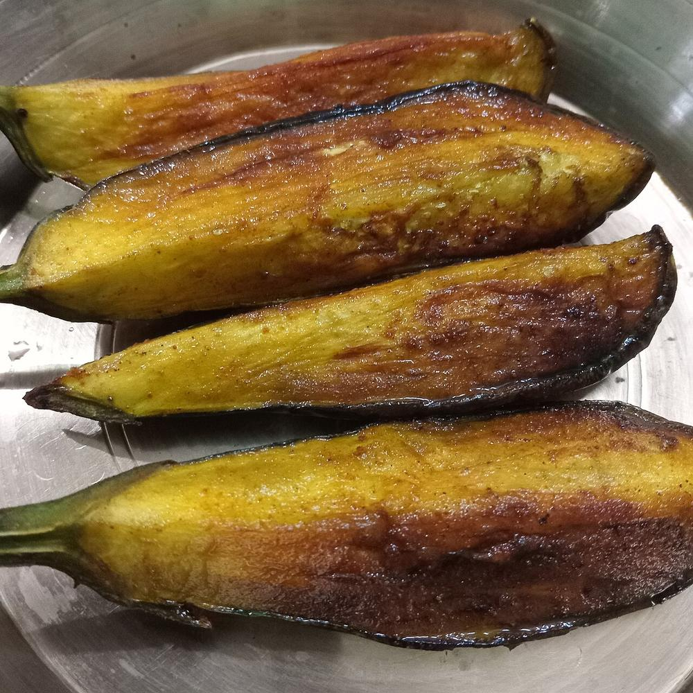

Prep10 min
Cook15 min
Total25 min
Serves4
Difficultyeasy
Contains: mustard
Checked against the ingredient list for milk, egg, fish, crustaceans, tree nuts, peanuts, sesame, mustard, soy and gluten. Nothing else is checked, and brands vary, so read the label on anything you have not bought before.
Ingredients
Quantities for 4.
- 1 large round variety (about 400g), cut into 1cm rounds Eggplantthe fat purple globe kind, not the slim ones
- 1 tsp Turmeric
- 1/2 tsp Chilli Powder
- 1/2 tsp Sugarhelps the surface carameliseoptional
- 2 tbsp Rice Flourfor a light crust; leave out for the plainer versionoptional
- 5 tbsp Mustard Oil
- 1 tsp Salt
Cookware
stovetop, tawa
Before you start
- Rub the eggplant rounds with the salt, turmeric, chilli powder and sugar and leave 20 minutes. They will bead with water.
- Blot the rounds dry with a cloth just before frying, otherwise the oil will spit.
- If you are using the rice flour, dust it on at the last moment so it does not go gummy.
Method
- Heat the mustard oil in a wide tawa until it smokes, then lower the heat to medium.Smoking the mustard oil first is not optional. Raw mustard oil tastes acrid.
- Lay in the eggplant rounds in a single layer, leaving space between them.Crowding drops the oil temperature and you get soggy slices instead of crisp ones.
- Fry 3-4 minutes without touching them, until the underside is deep brown and the edge looks frilled.
- Turn once with a flat spatula and fry the second side 3 minutes.Turn only once. Every extra flip makes the slice absorb more oil.
- Press the centre lightly. It should give completely, with no firm core left.
- Lift onto kitchen paper and fry the next batch, adding a little more oil if the pan looks dry.
- Serve immediately alongside hot rice and dal, while the edges are still crisp.
Storage
Eat within the hour. They go limp on standing and do not reheat well. Do not refrigerate.
Nutrition Good estimate
| Per serving128 g | Per 100 g | |
|---|---|---|
| Calories | 212 kcal | 166 kcal |
| Protein | 1.5 g | 1 g |
| Carbohydrate | 13.0 g | 10 g |
| of which sugars | 4.1 g | 3 g |
| Fibre | 3.4 g | 3 g |
| Fat | 17.8 g | 14 g |
| of which saturated | 2.1 g | 2 g |
| of which unsaturated | 14.2 g | 11 g |
Worked out from the listed quantities; most of the ingredient list could be weighed. Estimated from raw ingredients using USDA FoodData Central. Cooking changes are not modelled, and added salt is excluded, so sodium is not given.
Recipe v1.0.0, last updated 2026-07-31. Curated for Khaana and kept under version control.